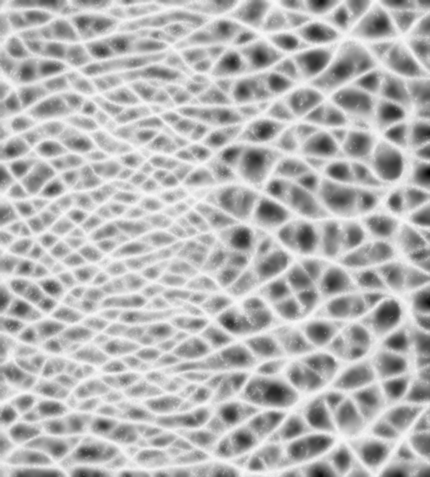

View of the artwork
in Westerpark, Amsterdam.
Freelance work for
Tanja Smeets
2024, Amsterdam
View of the artwork
in Westerpark, Amsterdam.
Commissioned by the city of Amsterdam, this sculptural work decorates the public square of Westergasfabriek, presenting itself as a distinctive landmark upon entering Amsterdam’s Westerpark. The concept of Tanja Smeets was to create a piece that commemorates an old chestnut tree that was felled at the location.

Output from the Physarum growth simulation
defining the topology of the steel members.
Based on her sketches and hand-made wire models, I adapted an algorithm that simulates the growth of slime mold (Physarum polycephalum) to produce a network of organically fluctuating structural members. The metaphor of an organism that feeds on decaying matter, assuming the shape of a fallen tree, symbolically links the sculpture to the cycles of biomass transformation that pervade the environmental network of the park.

Close-up of the artwork
in Westerpark, Amsterdam.
One of the design challenges was to enable the separation of the structure into largest possible segments aligned with the 3D-printing direction, reducing the number of individually printed parts. This was achieved by avoiding orthogonal joints as much as possible - instead, members with strongly differing orientation were carefully woven around each other, much like tree roots circumvent obstacles, thus reinforcing the organic look of the artwork.

Detail of the artwork overlaid by
the parametric model created in Grasshopper/Rhino.
The 6-metre long sculpture incorporates a seating area and a 3.50-metre tall "crown" fanning out towards the park entrance. It was 3D-printed by MX3D and hand-painted by the artist herself. The production was supervised by Harold Schouten (Wiseguys).